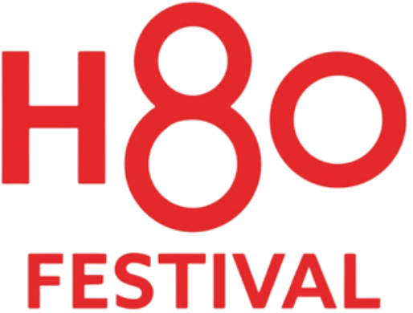
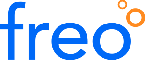
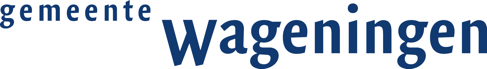
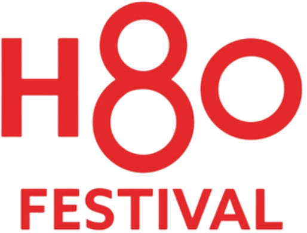
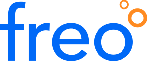
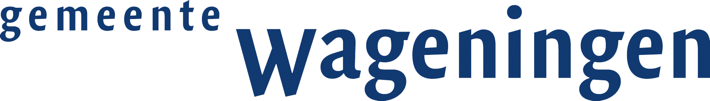

Stapje verder, altijd
Hoi! Ik ben Jop Marijnissen. Een jonge, gepassioneerde product designer die door een nieuwsgierige lens naar de wereld kijkt. Ik sta voor gebruiksvriendelijke producten die nét dat stapje verder gaan en iedereens dag wat beter, makkelijker & mooier maken.
Check m'n CV!

Case studies
Ontwerpen samen met de eindgebruiker
Ik geloof dat het ultieme ontwerp niet bestaat. Het kan namelijk áltijd beter. Maar toch probeer ik daar zo dichtbij mogelijk te komen. In mijn ontwerpen kom ik door uitgebreid onderzoek, veelvuldig prototypen & gebruikerstesten tot een product met een ervaring die écht aansluit op de behoeften van de eindgebruiker; een oplossing waarvan ze niet wist dat het de oplossing zou zijn.
Naast deze cases heb ik veel ervaring opgedaan bij mijn vorige stage en eigen projecten. Deze kan ik hier niet neerzetten, maar ik vertel je er graag over!
Deze merken zijn langsgekomen
 





Contact
Ben je geïnteresseerd geraakt in mij of in mijn werk? Ik bespreek graag wat we samen kunnen bereiken!
Neem contact met mij op